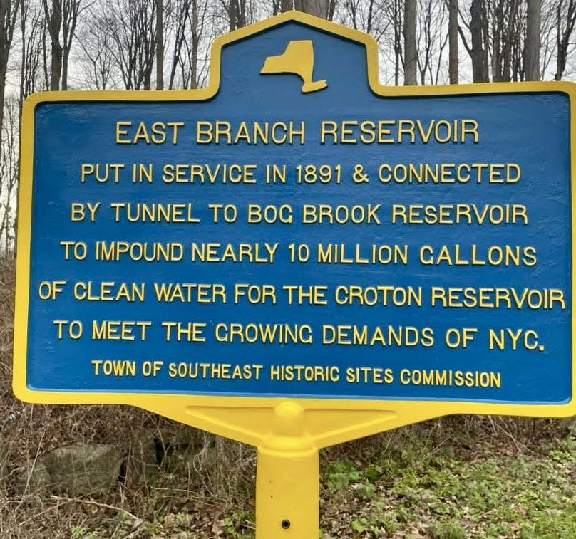

East Branch Reservoir
Milltown Road at Old Milltown Road.

EAST BRANCH RESERVOIR
Put in service in 1891 &
connected by tunnel to
Bog Brook Reservoir to impound
nearly 10 million gallons of
clean water for the Croton
Reservoir to meet the growing
demands of NYC.
About this Marker
The marker is recent — the product of a 2025 Eagle Scout project by Brewster High School senior Connor O’Reilly that included not only the marker itself but a digital collection on New York Heritage and an exhibit at the Southeast Museum in Brewster.
Construction of the East Branch Reservoir and Sodom Dam began in 1888 when the East Branch of the Croton River was diverted. The project was ambitious enough to attract national attention — the August 17, 1889 issue of Scientific American, published just three months after the catastrophic Johnstown Flood in Pennsylvania, featured the Sodom Dam on its cover and an engineering article by Harold Brown, C.E. framed explicitly as reassurance to an anxious public. Supervised by hydraulic engineers and employing cutting-edge technology, crews built stone retaining walls, culverts, bridges, and extensive rip-rap to prevent erosion, while a steel cable system transported massive stones across the construction area. The completed impoundment held 5.2 billion gallons of water and connected via a 1,773-foot tunnel to the neighboring Bog Brook Reservoir.
The human cost was not abstract. In fall 1889, a steel cable carrying platforms loaded with stone and cement snapped, sending a heavy cart crashing down and killing Rocco Giuseppe Pellettiere, a thirty-four-year-old Italian immigrant laborer who left a wife and two young children in Italy. On September 13, 1890, a violent storm struck the construction site, and a bolt of lightning hit a workers’ shelter near the Sodom Dam stone works, killing four men instantly — Nicolo Bellizza (17), Umberto Desantes (22), Bruno Butucci (44), and Antonio Gabrile (45). Two hearses made multiple trips to carry the men to a single grave at St. Lawrence O’Toole Catholic Cemetery in Brewster.
The reservoir came at a different kind of cost as well. 93 parcels totaling roughly 1,500 acres of the surrounding landscape were condemned by the City of New York; ninety-three parcels of farmland, mills, houses, a school, a church, and a natural lake (Mud Pond / Lake Kishawana) were taken. The neighboring community of Southeast Centre was the most directly affected — much of the working village was destroyed in the proceedings.
The marker reads “put in service in 1891”; the Aqueduct Commission’s own 1895 report gives the reservoir’s completion date as 1893. Both dates appear in the historical record. The total project cost for the East Branch and Bog Brook reservoirs was $1,981,658.
The East Branch Reservoir historic marker, the accompanying digital collection on New York Heritage, and an exhibit at the Southeast Museum are the work of Connor O’Reilly, completed as his Eagle Scout service project in 2025.
Town of Southeast, NY
Sources
- On-site photograph of the Town of Southeast Historic Sites Commission marker.
- Connor O’Reilly, “East Branch Reservoir Eagle Scout Project,” published via New York Heritage / Town of Southeast, 2024–2025.
- “Putnam County’s East Branch Reservoir History Collection Debuts,” New York Almanack, December 11, 2025.
- Report to the Aqueduct Commissioners (New York: Aqueduct Commission, 1895; Douglas Taylor & Co., printers).
- Harold Brown, C.E., “Sodom Dam and Reservoir,” Scientific American, Vol. LXI No. 7, August 17, 1889 (Munn & Co., publishers).
- Diane Galusha, Liquid Assets: A History of New York City’s Water System (Purple Mountain Press, 1999).
- Brewster Standard newspaper coverage of the construction era; deaths of Rocco Giuseppe Pellettiere (fall 1889) and the four workers killed in the September 13, 1890 lightning strike.
- Southeast Centre research project on this site — primary-source documentation of the watershed proceedings.